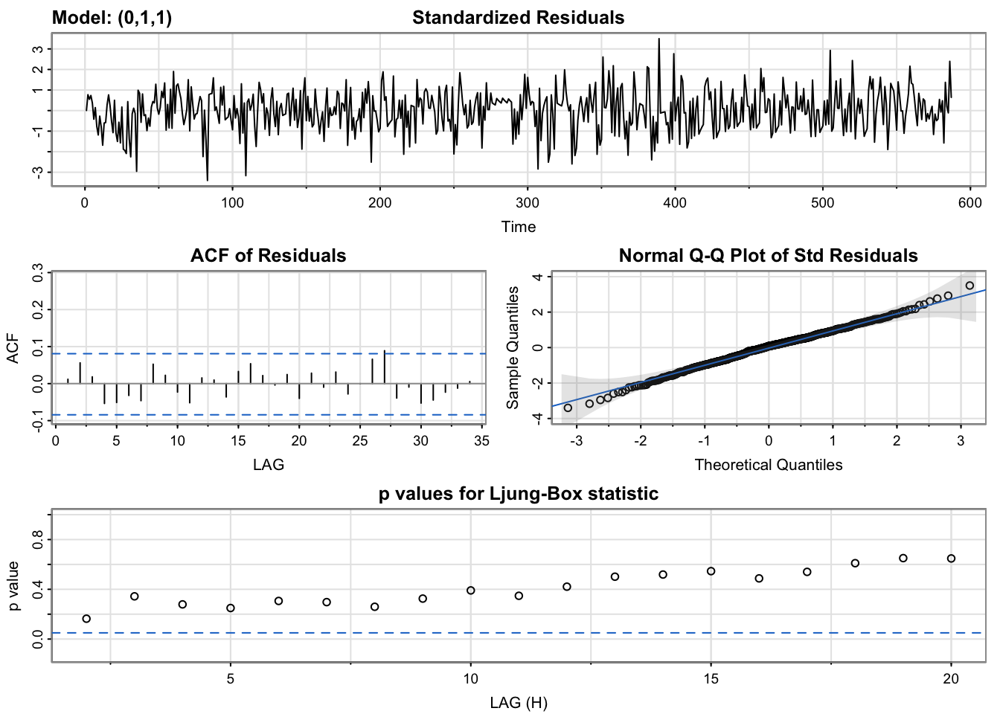

ARMA/ARIMA/SARIMA Models
Summary
After completing the exploratory data analysis (EDA) phase, the next step is to begin building time series models. In order to do so, one must first choose an appropriate model type, such as an ARMA (AutoRegressive Moving Average) model or one of its variations, including ARIMA (AutoRegressive Integrated Moving Average) or SARIMA (Seasonal AutoRegressive Integrated Moving Average).
An ARIMA model is generally notated as ARIMA(p,d,q) where p is the order of the AR process, d is the degree of differencing and q is the order of the MA process. The general equation of the model is given as follows:
\(\phi(B)(1-B)^d x_t = \delta + \theta(B) w_t\), where \(B\) is the backshift operator, \(w_t\) is the Gaussian white noise process, \(\delta\) is the drift term and \(\phi(B)\) and \(\theta(B)\) correspond to the AR and MA parts respectively.
Lag plots, auto-correlation function (ACF) and partial auto-correlation function (PACF) plots, decomposing the time series, and differencing are all useful techniques that were employed during the EDA phase to help inform the choice of model type and parameters. With a solid understanding of the data and its characteristics, one can begin to develop and refine time series models that can be used for forecasting.
Code for this section can be found here
Global Terrorism Database ARIMA Modeling
Splitting Series into Train and Test Sets for Model Validation Process
After cleaning and aggregating the Global Terrorism Database™ (GTD) (“Codebook Methodology Inclusion Criteria and Variables - UMD,” n.d.) by month, we shall be splitting the aggregated monthly data set into train and test sets for model validation. I have kept 587 observations for training and the remaining 48 observations for testing or validating. Therefore, I have kept aside 2 years (48 months or 48 observations) for forecasting purposes.
ACF and PACF Plots of Monthly Attacks

ADF Test of Monthly Attacks
\(H_0\): The time series is non-stationary. In other words, it has some time-dependent structure and does not have constant variance over time.
\(H_1\): The time series is stationary.
Augmented Dickey-Fuller Test
data: train_series
Dickey-Fuller = -7.2458, Lag order = 8, p-value = 0.01
alternative hypothesis: stationaryBecause the p-value from the ADF test is less than \(\alpha\) = 0.05, we reject the null hypothesis and conclude that the monthly attacks series is stationary. Although the ADF states that the original series is stationary, the ACF plots, which clearly indicate seasonality and trend, are more reliable than the ADF test. Therefore, it is safe to conclude that the series non-stationary as per the (ACF?) section above.
Log-Transformation of Monthly Attacks and its First and Second Order Differencing


Simply taking log of the number of monthly attacks does not make it stationary. First-differencing the log number of monthly attacks does, however, make the series stationary and this series should be employed for building our time series model. Keep in mind that because first-differencing was enough to make the series stationary, we do not need to second-difference it, helping us avoid over differencing the number of monthly attacks.
ADF Test of Log First-Differenced Monthly Attacks
\(H_0\): The time series is non-stationary. In other words, it has some time-dependent structure and does not have constant variance over time.
\(H_1\): The time series is stationary.
Augmented Dickey-Fuller Test
data: dlx
Dickey-Fuller = -12.802, Lag order = 8, p-value = 0.01
alternative hypothesis: stationaryBecause the p-value from the ADF test is less than \(\alpha\) = 0.05, we reject the null hypothesis and conclude that the log first-differenced monthly attacks series is stationary. Let us now check whether the ACF plots supports this hypothesis.
ACF and PACF Plots of Log First-Differenced Monthly Attacks

p values obtained from PACF are 0, 1, 2, 3, 4 q values obtained from ACF are: 0, 1 d (Difference): 1
Fitting ARIMA(p,d,q)
| p | d | q | AIC | BIC | AICc | |
|---|---|---|---|---|---|---|
| 2 | 0 | 1 | 1 | 1129.146 | 1137.892 | 1129.166 |
| 6 | 1 | 1 | 1 | 1131.028 | 1144.148 | 1131.069 |
| 3 | 0 | 1 | 2 | 1131.045 | 1144.165 | 1131.087 |
| 12 | 2 | 1 | 3 | 1120.047 | 1146.287 | 1120.192 |
| 10 | 2 | 1 | 1 | 1130.116 | 1147.609 | 1130.185 |
| 4 | 0 | 1 | 3 | 1130.121 | 1147.614 | 1130.189 |
| 7 | 1 | 1 | 2 | 1133.117 | 1150.610 | 1133.186 |
| 14 | 3 | 1 | 1 | 1131.179 | 1153.046 | 1131.283 |
| 8 | 1 | 1 | 3 | 1131.272 | 1153.139 | 1131.376 |
| 11 | 2 | 1 | 2 | 1131.710 | 1153.577 | 1131.813 |
| 16 | 3 | 1 | 3 | 1126.189 | 1156.802 | 1126.383 |
| 18 | 4 | 1 | 1 | 1132.357 | 1158.597 | 1132.502 |
| 15 | 3 | 1 | 2 | 1132.897 | 1159.137 | 1133.042 |
| 19 | 4 | 1 | 2 | 1132.672 | 1163.285 | 1132.866 |
| 20 | 4 | 1 | 3 | 1134.670 | 1169.657 | 1134.920 |
| 17 | 4 | 1 | 0 | 1176.672 | 1198.538 | 1176.775 |
| 13 | 3 | 1 | 0 | 1187.101 | 1204.594 | 1187.170 |
| 9 | 2 | 1 | 0 | 1201.337 | 1214.457 | 1201.379 |
| 5 | 1 | 1 | 0 | 1255.509 | 1264.255 | 1255.529 |
| 1 | 0 | 1 | 0 | 1434.634 | 1439.007 | 1434.640 |
| 21 | NA | NA | NA | NA | NA | NA |
| 22 | NA | NA | NA | NA | NA | NA |
| 23 | NA | NA | NA | NA | NA | NA |
| 24 | NA | NA | NA | NA | NA | NA |
Best Model in terms of AIC: p d q AIC BIC AICc
12 2 1 3 1120.047 1146.287 1120.192
Best Model in terms of AICc: p d q AIC BIC AICc
12 2 1 3 1120.047 1146.287 1120.192
Best Model in terms of BIC: p d q AIC BIC AICc
2 0 1 1 1129.146 1137.892 1129.166
Model summary and error metrics of ARIMA(0, 1, 1): Series: lx
ARIMA(0,1,1)
Coefficients:
ma1
-0.8436
s.e. 0.0240
sigma^2 = 0.3992: log likelihood = -562.57
AIC=1129.15 AICc=1129.17 BIC=1137.89
Training set error measures:
ME RMSE MAE MPE MAPE MASE ACF1
Training set -0.0182295 0.6307598 0.4949849 -Inf Inf 0.7886882 0.01012716The best model with the lowest BIC metric is the ARIMA(0,1,1). This model is a pure moving average model with first-order differencing and a single lagged moving average term. Therefore, the model has no autoregressive terms, i.e., it does not use the past values of the variable to predict its future values. It uses only the difference between the current and previous values of the variable and the error term to make the forecast. Although, according to both AIC and AICc metrics, the ARIMA(2,1,3) model is better, we shall choose our model using the BIC metric because BIC is more stringent than AIC in penalizing the number of parameters used in the model, making it more effective in helping reduce overfitting.
ARIMA(2,1,3) is a time series model that involves taking the first-order difference of the series, using two Autoregressive (AR) terms and three Moving Average (MA) terms. This means that the model uses not only the past two values of the variable, but also the past three errors to make the forecast. The inclusion of the MA terms allows the model to capture the influence of random shocks or noise in the data. However, including too many autoregressive terms may lead to overfitting, which can result in poor forecast performance and we shall explore that in the next few sections
The choice between ARIMA(0,1,1) and ARIMA(2,1,3) depends on the nature of the data and the performance of the models in terms of RMSE or other error metrics. If the data has a clear trend, then including Autoregressive terms may improve the forecast accuracy. On the other hand, if the data is more random, then a simpler model like ARIMA(0,1,1) may be sufficient. There is a clear decreasing trend of monthly terrorist attacks from the 1970s to 2015, with random and/or seasonal fluctuations, but the number of attacks does start increasing sharply after 2015. Therefore, no single pattern is discerned along the entire series and, moreover, we shall be abiding by the principle of parsimony if we select ARIMA(0,1,1) as the best model.
The equation of the ARIMA(0,1,1) model is given by:
\(\begin{equation}(1-B)(1-\theta_1B)X_t = \omega_t\end{equation}\), giving us:
\(\begin{equation}\left(1-\theta_1B+B-\theta_1B^2\right)X_t = \omega_t\end{equation}\), giving us:
\(\begin{equation}\left(1-\theta_1B\right)X_t - B\left(1-\theta_1B\right)X_t = \omega_t\end{equation}\), giving us:
\(\begin{equation}X_t - \theta_1X_{t-1} - B\left(X_{t-1}-\theta_1X_{t-2}\right) = \omega_t\end{equation}\), finally substituting the MA(1) values from the model’s summary:
\(\begin{equation}X_t = -0.8436X_{t-1} + X_{t-1} + 0.8436X_{t-2} + \omega_t\end{equation}\), where \((1-B)\) is the differencing operator, which represents the first-order difference of the series. \(X_t\) is the time series, \(\theta_1\) is the parameter of the MA component, and \(\omega_t\) is the Gaussian white noise process.
Note that \(B\) is the backshift operator, which shifts the time series back by one period.
Model Diagnostics of ARIMA(0,1,1)

converged
$fit
Call:
arima(x = xdata, order = c(p, d, q), seasonal = list(order = c(P, D, Q), period = S),
xreg = constant, transform.pars = trans, fixed = fixed, optim.control = list(trace = trc,
REPORT = 1, reltol = tol))
Coefficients:
ma1 constant
-0.8453 -0.0028
s.e. 0.0239 0.0041
sigma^2 estimated as 0.3982: log likelihood = -562.33, aic = 1130.67
$degrees_of_freedom
[1] 584
$ttable
Estimate SE t.value p.value
ma1 -0.8453 0.0239 -35.3385 0.0000
constant -0.0028 0.0041 -0.6943 0.4877
$AIC
[1] 1.929468
$AICc
[1] 1.929504
$BIC
[1] 1.951857Standardized Residuals: Essentially stating that if the errors are white noise. The model does look stationary as it captures all the signals and essentially captures the raw white noise.
ACF Of Residuals: Auto-correlation of the residuals. The only q value to inspect is 1.
Q-Q Plot: The series follows a normal distribution pretty closely as even the tails seem to be on the normal line.
p values of the Ljung-Box statistic: Ideally, we would like to fail to reject the null hypothesis. That is, we would like to see the p-value of the test be greater than 0.05 because this means the residuals for our time series model are independent, which is often an assumption we make when creating a model. Since all lag values greater than 5 have a p-value greater than 0.05, the residuals have no remaining autocorrelations.
The only MA term in the ARIMA(0,1,1) model is also significant at the \(\alpha\)=5% level as shown by its p-value = 0. Let’s check whether all terms in the ARIMA(2,1,3) model are significant or not.
Model Diagnostics of ARIMA(2,1,3)

$fit
Call:
arima(x = xdata, order = c(p, d, q), seasonal = list(order = c(P, D, Q), period = S),
xreg = constant, transform.pars = trans, fixed = fixed, optim.control = list(trace = trc,
REPORT = 1, reltol = tol))
Coefficients:
ar1 ar2 ma1 ma2 ma3 constant
0.8068 -0.5518 -1.6452 1.2913 -0.5429 -0.0026
s.e. 0.4763 0.4308 0.4609 0.7776 0.3347 0.0036
sigma^2 estimated as 0.3934: log likelihood = -558.77, aic = 1131.54
$degrees_of_freedom
[1] 580
$ttable
Estimate SE t.value p.value
ar1 0.8068 0.4763 1.6939 0.0908
ar2 -0.5518 0.4308 -1.2809 0.2007
ma1 -1.6452 0.4609 -3.5693 0.0004
ma2 1.2913 0.7776 1.6608 0.0973
ma3 -0.5429 0.3347 -1.6223 0.1053
constant -0.0026 0.0036 -0.7029 0.4824
$AIC
[1] 1.93095
$AICc
[1] 1.931198
$BIC
[1] 1.983192Like the ARIMA(0,1,1) output for the summary of residuals, the ARIMA(2,1,3) does as well, if not better. The ACF of residuals for ARIMA(2,1,3), although, has spikes less significant than ARIMA(0,1,1) and the p-values for Ljung-Box test for ARIMA(2,1,3) are higher than those of ARIMA(0,1,1). However, a key difference is that only the MA(1) term in the ARIMA(2,1,3) model is significant at the \(\alpha\)=5% level as shown by its p-value = 0.0004 and all other terms are not significant. Therefore, a simpler model, ARIMA(0,1,1), would be a better fit to the log of monthly attacks series.
Let’s see what model is outputted by auto.arima().
Checking Model Output of Log Monthly Attacks with auto.arima()
Model metrics using auto.arima(): Series: lx
ARIMA(0,1,1)
Coefficients:
ma1
-0.8436
s.e. 0.0240
sigma^2 = 0.3992: log likelihood = -562.57
AIC=1129.15 AICc=1129.17 BIC=1137.89
Training set error measures:
ME RMSE MAE MPE MAPE MASE ACF1
Training set -0.0182295 0.6307598 0.4949849 -Inf Inf 0.7886882 0.01012716From the above output, auto.arima() too outputted an ARIMA(0,1,1) model, which is is the best model returned by the Arima() function in terms of lowest BIC (best-fit?). Some points to keep in mind when using these functions is as follows:
The auto.arima() function in R uses a stepwise algorithm to search through the space of possible ARIMA models and select the one with the lowest AIC value. While this approach can be computationally efficient and provide a good starting point for model selection, it does not necessarily always find the best possible model for a given time series.
On the other hand, the Arima() function in R allows us to specify the exact order of the ARIMA model and can be used to fit more complex models, such as those with seasonality, exogenous variables, or other constraints. By specifying the exact order of the model, we have more control over the modeling process and can potentially obtain a better fit to the data.
In summary, the auto.arima() function can be a useful tool for quickly identifying a potentially good model, but it is not a substitute for careful model selection and customization seen when using the Arima() function.
Forecasting ARIMA(0,1,1) and ARIMA(2,1,3)
From the above graph, we can note that the forecasted number of attacks remains constant at around 1 for both models on the test set (October 2010 to December 2020). This performance is not what was expected and, hence, it is possible that the models are not able to capture the underlying patterns in the data. This can be due to a variety of reasons, such as insufficient data and the models not being complex enough to capture the variation in the data. It is, however, pragmatic to check whether the sarima.for() function’s predictions may forecast differently. Let us find out below.
Forecasting ARIMA(0,1,1) using sarima.for()

$pred
Jan Feb Mar Apr May Jun Jul Aug
2018
2019 1.954087 1.951260 1.948432 1.945605 1.942778 1.939950 1.937123 1.934296
2020 1.920159 1.917332 1.914505 1.911678 1.908850 1.906023 1.903196 1.900368
Sep Oct Nov Dec
2018 1.956914
2019 1.931469 1.928641 1.925814 1.922987
2020 1.897541 1.894714 1.891886
$se
Jan Feb Mar Apr May Jun Jul
2018
2019 0.6385446 0.6459664 0.6533040 0.6605600 0.6677372 0.6748381 0.6818650
2020 0.7225930 0.7291599 0.7356681 0.7421193 0.7485148 0.7548562 0.7611448
Aug Sep Oct Nov Dec
2018 0.6310354
2019 0.6888203 0.6957060 0.7025242 0.7092769 0.7159659
2020 0.7673818 0.7735685 0.7797062 0.7857959 Like the previous forecast, we can note that sarima.for() too does not accurately capture the inherent randomness and/or seasonality in the series and, hence, it outputs a highly linear, downward trending forecast. As per its 95% confidence bound, the number of attacks will fluctuate anywhere between 3 to 12 attacks every month from 2019 to end of 2020 (keep in mind that the plot is log of monthly attacks).
Comparing ARIMA(0,1,1) with Benchmarks

ARIMA(0,1,1) model metrics: Series: log_monthly_attacks
ARIMA(0,1,1)
Coefficients:
ma1
-0.8436
s.e. 0.0240
sigma^2 = 0.3992: log likelihood = -562.57
AIC=1129.15 AICc=1129.17 BIC=1137.89
Training set error measures:
ME RMSE MAE MPE MAPE MASE ACF1
Training set -0.0182295 0.6307598 0.4949849 -Inf Inf 0.7143174 0.01012716
Mean metrics: 
Ljung-Box test
data: Residuals from Mean
Q* = 2327.6, df = 23, p-value < 2.2e-16
Model df: 1. Total lags used: 24 ME RMSE MAE MPE MAPE MASE ACF1
Training set 1.113627e-15 0.8556503 0.6744582 -Inf Inf 0.9733169 0.534751
Snaive metrics: 
Ljung-Box test
data: Residuals from Seasonal naive method
Q* = 173.01, df = 24, p-value < 2.2e-16
Model df: 0. Total lags used: 24 ME RMSE MAE MPE MAPE MASE ACF1
Training set -0.03643642 0.8807625 0.6929481 -Inf Inf 1 0.1556335
Random Walk metrics: 
Ljung-Box test
data: Residuals from Random walk
Q* = 178.32, df = 24, p-value < 2.2e-16
Model df: 0. Total lags used: 24 ME RMSE MAE MPE MAPE MASE ACF1
Training set -0.001694969 0.8215562 0.6276053 -Inf Inf 0.9057032 -0.5152558From the above plot, only the Snaive benchmark method’s forecasts seem more plausible compared to that of the ARIMA(0,1,1) model. The forecasts produced from the Snaive benchmark have the greatest amount of fluctuations or seasonality in a higher range of number of monthly attacks. However, the metrics paint a different story. The ARIMA(0,1,1) model’s training error measures are better than those of all the benchmarks. There are several reasons for this phenomenon:
Model Assumptions: The ARIMA model assumes that the data is stationary, which means that the mean and variance of the data do not change over time. If the data violates this assumption, the ARIMA model may not perform well. In contrast, the Snaive model does not assume stationarity, which may make it more robust to non-stationary data.
Parameter Estimation: The ARIMA model has three parameters (p, d, q) that need to be estimated, whereas the Snaive model has only one parameter (the seasonality). It is possible that the parameter estimation process for the ARIMA model was not optimal, leading to suboptimal forecast performance.
Forecast Horizon: The Snaive model may perform better than the ARIMA model for shorter forecast horizons, while the ARIMA model may perform better for longer forecast horizons. This is because the Snaive model assumes that the future values of the time series will be the same as the past values at the same time of year, which may be a reasonable assumption for short forecast horizons, but not for longer ones.
Global Terrorism Database SARIMA Modeling
Visualizing Seasonal Components of Monthly Attacks
From the above seasonal component graph of the number of monthly terrorist attacks, we notice there does exist some level of seasonality in the original series. The seasonal component graph illustrates the degree of seasonal variation in the number of terrorist attacks. The magnitude of the seasonal variation is shown on the y-axis of the graph, and it indicates how much the number of terrorist attacks deviates from the average value for each season. The graph shows a repeating pattern in the number of terrorist attacks over time, with clear peaks in the first and second quarters and troughs in the third quarter. This pattern implies that the number of terrorist attacks in the US might be influenced by the season of the year.
Visualizing Seasonally Differenced Monthly Attacks
ACF and PACF Plots of Seasonally Differenced Monthly Attacks

After first ordinary differencing the original series (ACF?), we saw a lot of seasonal correlation left, suggesting that first order differencing did not help in transforming the raw data into a stationary series. This differenced series cannot be used for building a robust SARIMA model. Therefore, a seasonal differencing on the original monthly attacks was performed above and we can still notice some correlation left, but lesser compared to when the raw series was differenced with first order. Therefore, it could be that D=1 and d=0. Let’s keep this as one option and let’s proceed with performing both seasonal differencing and first-order differencing the raw monthly attacks series.
ACF and PACF Plots of Seasonally and First Order Differenced Monthly Attacks
After both seasonal differencing and ordinary differencing together the raw data, the ACF and PACF plots seem to portray the least correlation than the individual differencing methods. Next, we shall difference and select the relevant p,d,q,P,D,Q values from the original monthly attacks series for our SARIMA model.
From the seasonal differencing and ordinary differencing (together) ACF and PACF plots, the following combinations for p,d,q,P,D,Q are:
q values obtained from ACF = 0,1,2,3,4 Q values obtained from ACF = 1 p values obtained from PACF = 0,1,2,3,4 P values obtained from PACF = 1,2 d (Difference) = 1 D (Seasonal Difference) = 1
Fitting ARIMA(p,d,q)(P,D,Q)
| p | d | q | P | D | Q | AIC | BIC | AICc |
|---|---|---|---|---|---|---|---|---|
| 0 | 1 | 0 | 0 | 1 | 0 | 3952.891 | 3957.286 | 3952.897 |
| 0 | 1 | 0 | 0 | 1 | 1 | 3670.269 | 3679.059 | 3670.289 |
| 0 | 1 | 0 | 1 | 1 | 0 | 3827.797 | 3836.587 | 3827.817 |
| 0 | 1 | 0 | 1 | 1 | 1 | 3670.336 | 3683.521 | 3670.376 |
| 0 | 1 | 0 | 2 | 1 | 0 | 3765.751 | 3778.937 | 3765.791 |
| 0 | 1 | 0 | 2 | 1 | 1 | 3671.380 | 3688.961 | 3671.447 |
| 0 | 1 | 1 | 0 | 1 | 0 | 3705.459 | 3714.249 | 3705.479 |
| 0 | 1 | 1 | 0 | 1 | 1 | 3495.035 | 3508.220 | 3495.075 |
| 0 | 1 | 1 | 1 | 1 | 0 | 3596.169 | 3609.355 | 3596.209 |
| 0 | 1 | 1 | 1 | 1 | 1 | 3492.557 | 3510.138 | 3492.625 |
| 0 | 1 | 1 | 2 | 1 | 0 | 3570.165 | 3587.746 | 3570.232 |
| 0 | 1 | 2 | 0 | 1 | 0 | 3701.229 | 3714.415 | 3701.269 |
| 0 | 1 | 2 | 0 | 1 | 1 | 3493.391 | 3510.972 | 3493.458 |
| 0 | 1 | 2 | 1 | 1 | 0 | 3595.313 | 3612.894 | 3595.381 |
| 0 | 1 | 3 | 0 | 1 | 0 | 3699.991 | 3717.572 | 3700.058 |
| 1 | 1 | 0 | 0 | 1 | 0 | 3818.806 | 3827.596 | 3818.826 |
| 1 | 1 | 0 | 0 | 1 | 1 | 3553.235 | 3566.421 | 3553.276 |
| 1 | 1 | 0 | 1 | 1 | 0 | 3693.837 | 3707.023 | 3693.878 |
| 1 | 1 | 0 | 1 | 1 | 1 | 3552.817 | 3570.398 | 3552.884 |
| 1 | 1 | 0 | 2 | 1 | 0 | 3651.212 | 3668.793 | 3651.279 |
| 1 | 1 | 1 | 0 | 1 | 0 | 3700.223 | 3713.408 | 3700.263 |
| 1 | 1 | 1 | 0 | 1 | 1 | 3492.442 | 3510.023 | 3492.510 |
| 1 | 1 | 1 | 1 | 1 | 0 | 3594.929 | 3612.510 | 3594.996 |
| 1 | 1 | 2 | 0 | 1 | 0 | 3704.894 | 3722.475 | 3704.961 |
| 2 | 1 | 0 | 0 | 1 | 0 | 3777.584 | 3790.770 | 3777.624 |
| 2 | 1 | 0 | 0 | 1 | 1 | 3521.643 | 3539.224 | 3521.710 |
| 2 | 1 | 0 | 1 | 1 | 0 | 3654.644 | 3672.225 | 3654.712 |
| 2 | 1 | 1 | 0 | 1 | 0 | 3700.164 | 3717.745 | 3700.232 |
| 3 | 1 | 0 | 0 | 1 | 0 | 3772.136 | 3789.717 | 3772.204 |
Best Model in terms of AIC: p d q P D Q AIC BIC AICc
22 1 1 1 0 1 1 3492.442 3510.023 3492.51
Best Model in terms of AICc: p d q P D Q AIC BIC AICc
22 1 1 1 0 1 1 3492.442 3510.023 3492.51
Best Model in terms of BIC: p d q P D Q AIC BIC AICc
8 0 1 1 0 1 1 3495.035 3508.22 3495.075The best model with the lowest BIC metric is the SARIMA(0,1,1,0,1,1) model. Although, according to both AIC and AICc metrics, the SARIMA(1,1,1,0,1,1) is better, we shall choose our model using the BIC metric because BIC is more stringent than AIC in penalizing the number of parameters used in the model, making it more effective in helping reduce overfitting. The equation of the SARIMA(0,1,1,0,1,1) model is given by:
\(\begin{equation}(1-B)(1-B^1)y_t = \delta + (1+\phi_1B)(1-\theta_1B-\theta_2B^2)w_t\end{equation}\), where \((1-B)\) and \((1-B^1)\) are the differencing operators, which represent the first-order difference of the series. \(y_t\) is the time series, \(\delta\) is the drift term, \(\phi_1\) and \(\theta_1\), \(\theta_2\) are the parameters of the AR and MA parts, respectively, and \(w_t\) is the Gaussian white noise process.
Note that \(B\) is the backshift operator, which shifts the time series back by one period.
Model Diagnostics of ARIMA(0,1,1)(0,1,1)
Standardized Residuals: Essentially stating if the errors are white noise. The model does look stationary as it captures all the signals and essentially captures the raw white noise.
ACF Of Residuals: However, looking at the ACF of the Residuals gives us a definitive answer to whether the model is stationary. Because some spikes are not within the significance limits, the model is not being able to capture all the signal in the data. In fact, the ARIMA(1,1,2) model’s diagnostics (ARIMA-Diag?) are better than that of ARIMA(0,1,1)(0,1,1) above.
Q-Q Plot: The series weakly follows a normal distribution as the tails waver away significantly from the normal line.
p values of the Ljung-Box statistic: Ideally, we would like to fail to reject the null hypothesis. That is, we would like to see the p-value of the test be greater than 0.05 because this means the residuals for our time series model are independent, which is often an assumption we make when creating a model. Since all lag values greater than 5 have a p-value less than 0.05, residuals have remaining autocorrelations.
Forecast for the next 3 years using ARIMA(0,1,1)(0,1,1)
Series: monthly_attacks_ts
ARIMA(0,1,1)(0,1,1)[12]
Coefficients:
ma1 sma1
-0.6661 -0.9261
s.e. 0.0374 0.0322
sigma^2 = 19.11: log likelihood = -1744.52
AIC=3495.03 AICc=3495.07 BIC=3508.22
Training set error measures:
ME RMSE MAE MPE MAPE MASE ACF1
Training set 0.4707554 4.317518 2.887572 NaN Inf 0.7582246 0.07436485Comparing ARIMA(0,1,1)(0,1,1) with benchmarks
Best model metrics: Best model metrics: Series: monthly_attacks_ts
ARIMA(0,1,1)(0,1,1)[12]
Coefficients:
ma1 sma1
-0.6661 -0.9261
s.e. 0.0374 0.0322
sigma^2 = 19.11: log likelihood = -1744.52
AIC=3495.03 AICc=3495.07 BIC=3508.22
Training set error measures:
ME RMSE MAE MPE MAPE MASE ACF1
Training set 0.4707554 4.317518 2.887572 NaN Inf 0.7582246 0.07436485Snaive metrics: ME RMSE MAE MPE MAPE MASE ACF1
Training set -0.6016667 6.093029 3.808333 -Inf Inf 1 0.4168619Seasonal Cross Validation of ARIMA(0,1,1)(0,1,1) and ARIMA(1,1,1)(0,1,1) using 1 step ahead forecasts
MAE for ARIMA(0,1,1)(0,1,1) is: 2.155092
RMSE for ARIMA(0,1,1)(0,1,1) is: 7.428068
MAE for ARIMA(1,1,1)(0,1,1) is: 2.092574
RMSE for ARIMA(1,1,1)(0,1,1) is: 7.410171Both MAE and RMSE metrics agree that ARIMA(1,1,1)(0,1,1) is the best model by a slight margin. However, the BIC metric does not agree with this result as it outputted ARIMA(0,1,1)(0,1,1) as the model with lowest BIC. AIC and AICc metrics, however, do agree with the MAE and RMSE metrics generated from Seasonal Cross Validation using 1 step ahead forecasts. Let’s see whether this is the case when forecasting 12 steps ahead.
Seasonal Cross Validation of ARIMA(0,1,1)(0,1,1) and ARIMA(1,1,1)(0,1,1) using 12 steps (seasonal period) ahead forecasts
[1] 537This plot gives cross-validation statistics up to horizon 12. The procedure for seasonal cross validation using 12 steps ahead is very similar to seasonal cross validation using 1 step ahead. We need to change the “h” parameter to the desired the number of time horizons we want to forecast for. The farima() function manually written by us helps us call our desired SARIMA model with the number of horizons. Then, farima() function is called inside the tsCV() function, which helps us store the cross-validated errors for up to 12 steps ahead. Then, because we get forecasts for each time horizon, we need to take the mean of the squared column using colMeans to obtain MSE.
Although we observed that the MSE and RMSE of ARIMA(1,1,1)(0,1,1) when forecasting 1 step ahead was lower than that of ARIMA(0,1,1)(0,1,1), from the above plot it can be seen that the cross-validated MSEs get lower or better as the number of forecasting steps increases. Both models’ MSE performance follow a very similar pattern, with ARIMA(0,1,1)(0,1,1), picked by lowest BIC, having a lower MSE across all forecasting steps, except for step 1. Therefore, ARIMA(0,1,1)(0,1,1) is the better SARIMA model!